S01 · Tiny toothless contact
Bounded mouth/acorn/hand edit. Check one acorn, support, muzzle and actual tiny no-teeth opening.


The owner accepted 19 prior visual proposals and rejected five exact hashes. Those five have new revisions below. Existing selection ledgers have not been rebound, and no generated video or connected-motion join is approved by this board. Connected groups require the same camera/background and stable character identity, root, scale, anatomy and contacts. Click an image for native size.
Opening video diagnosis · Raw connected still pixel audit · Machine-readable card hashes
Bounded mouth/acorn/hand edit. Check one acorn, support, muzzle and actual tiny no-teeth opening.
Bounded edit. Check small notch, closed mouth, hand contact and same actor root.

Bounded correction on the selected contact camera plate. Check actor/stone seams and acorn ground support; no active selection changed.
Bounded release from the same contact camera plate. Check acorn position/custody and contact-to-release join.

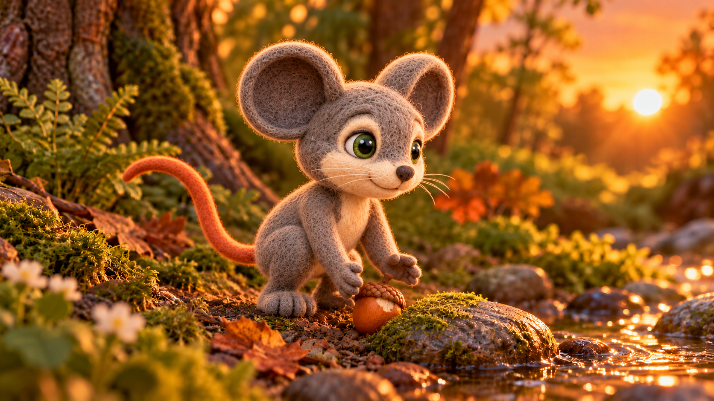
Fixed accepted L001 r004 body/root and exterior background; head-envelope seam needs native review.

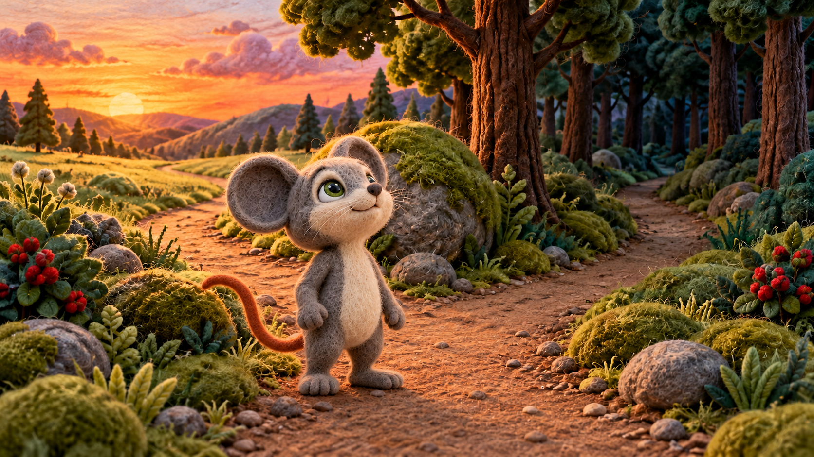
Screen-left head turn; exact exterior background; check projection and neck seam.
Screen-right head turn; exact exterior background; check projection and neck seam.

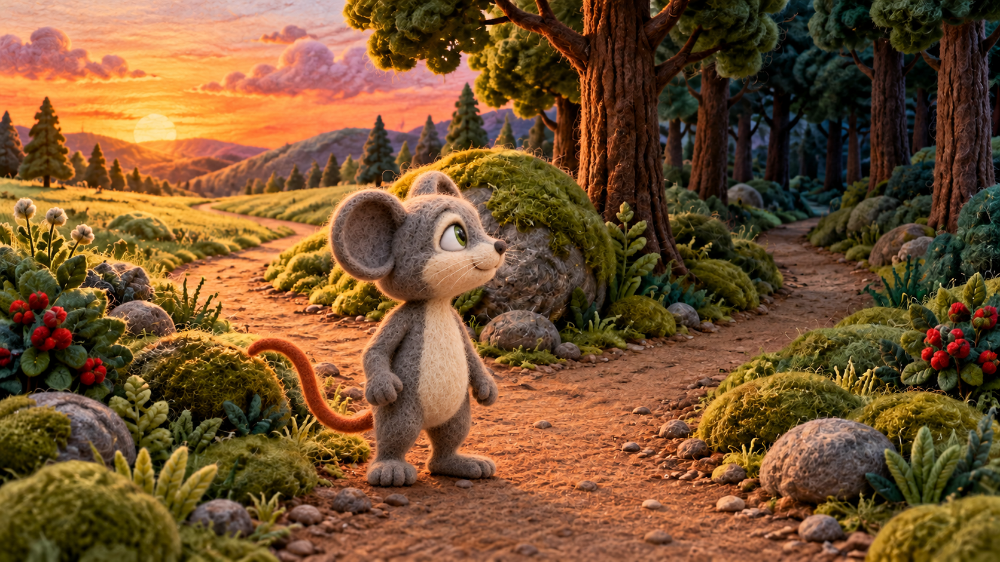
Head pitch; exact exterior background; check projection and neck seam.

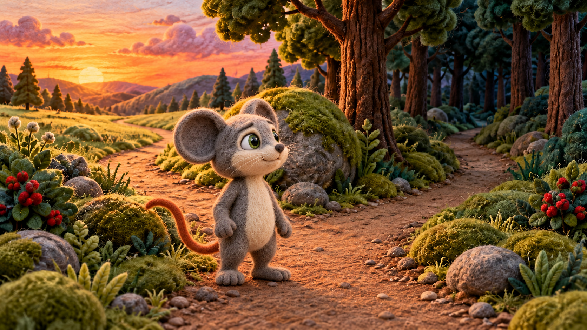
Screen-left turn; fixed body/root; compare against accepted L006 anchor.

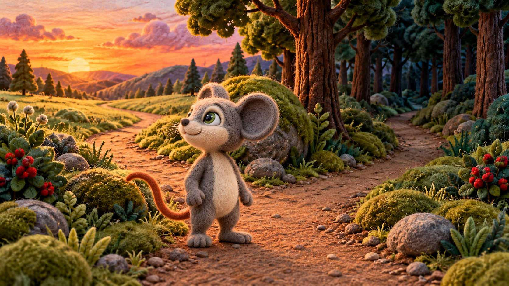
Screen-right turn; fixed body/root; check final wide-to-portrait cut.

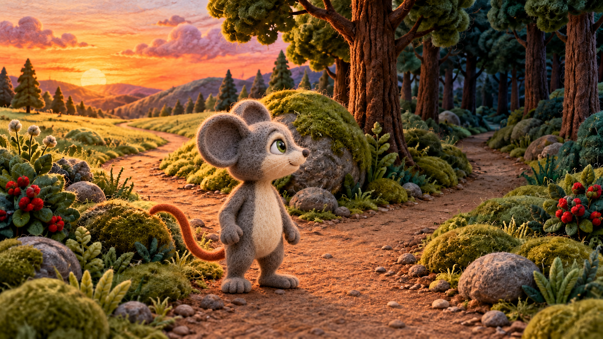
Check Milo is grounded and approaching Leo's rear paw, with a possible next contact.


Targeted toe-to-rear-paw contact before the forward pitch. Check contact and Leo's four-paw topology at native size; r004 remains selected.
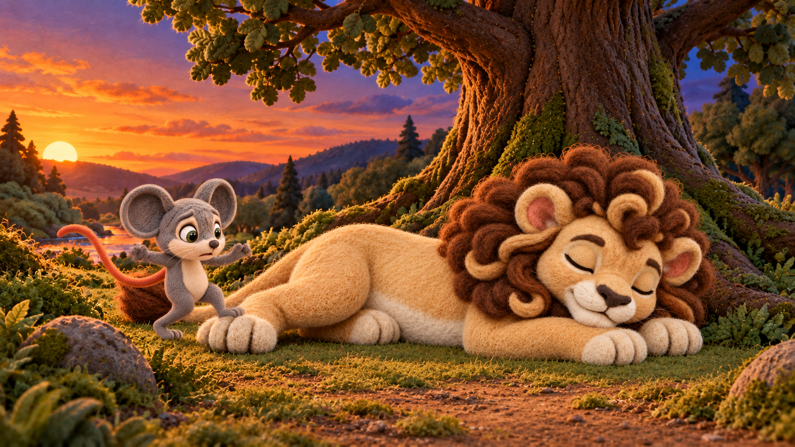
Check contact/support loss and trajectory. A source still is not a motion pass.

Owner rejected the prior distorted Milo body. New proposal keeps a compact, grounded Milo beside Leo's nose; check full anatomy and roll-to-landing geography.
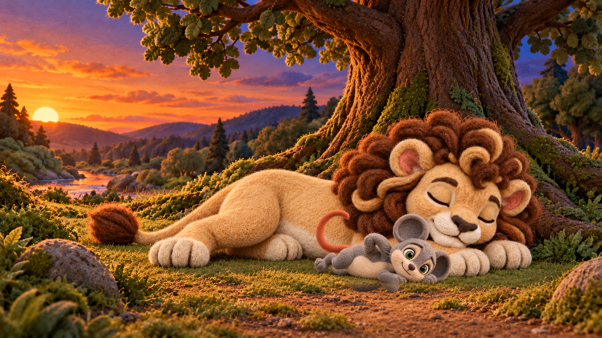
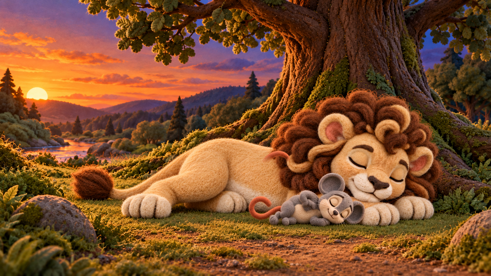
Targeted revision retains one Milo at Leo's nose and exact exterior pixels. Check head/mane seam, actor scale and actual rise.


Owner rejected prior body. New bounded stepping pose excludes Leo's face and protects the exterior. Check Milo's limbs, tail and path from nose to arrival.
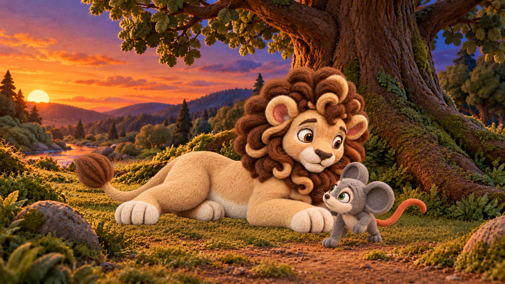

Owner rejected prior body. New one-foreleg pose keeps Leo lying and Milo at the same root; check four Leo paws and arm attachment.
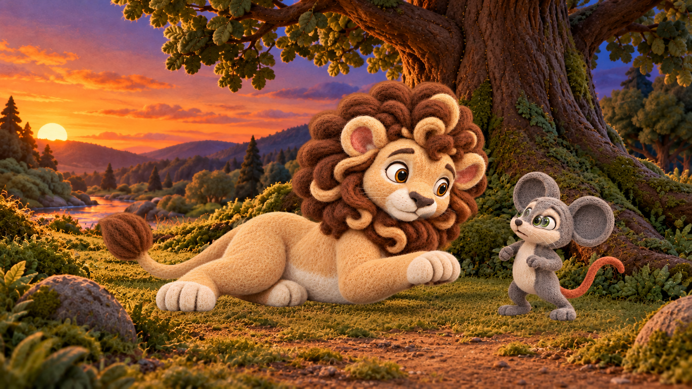
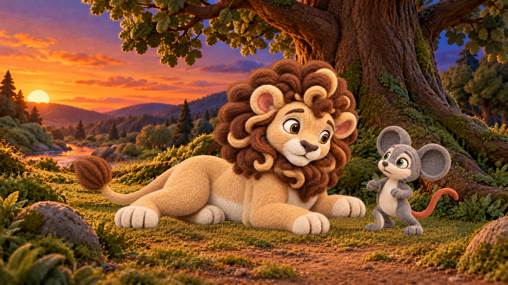
Owner rejected prior body. New one-foreleg intermediate moves toward the selected block; check attachment, contact and Milo anatomy.
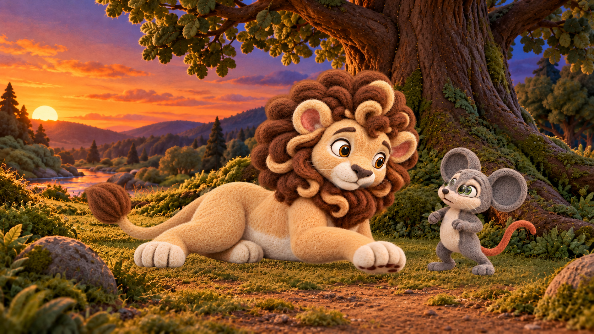
Face-only proposal with fixed actor roots; a same-raster hold remains an honest fallback if reaction is indistinct.


Face-only proposal; inspect crop and ear/head continuity.

Face-only proposal; inspect continuity and no extra limb.

Owner found the far front paw still missing in r002. New candidate has a separately visible image-top-right paw; inspect attachment and four-paw count. L016/L017/L018 remain bound to historical r001.
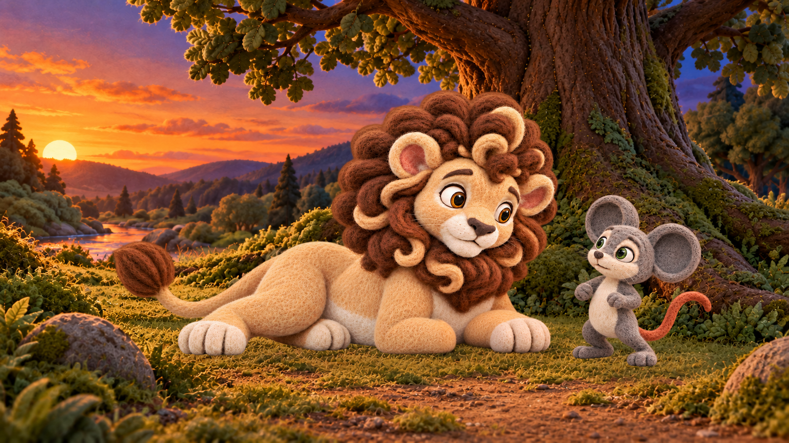
Auxiliary mouth-only reference, not a dialogue endpoint or selected calibration for every view.

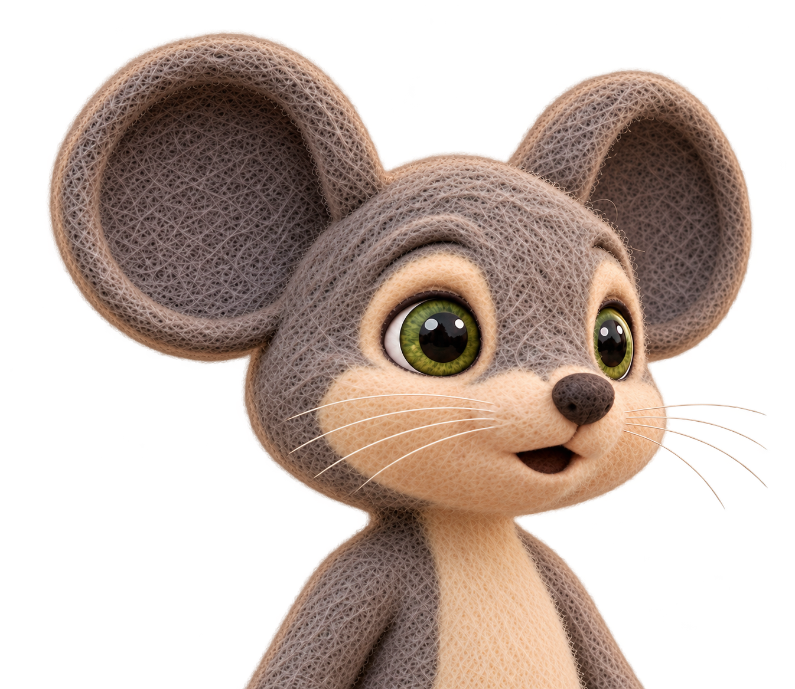
Auxiliary mouth-only reference, not a dialogue endpoint or selected calibration for every view.

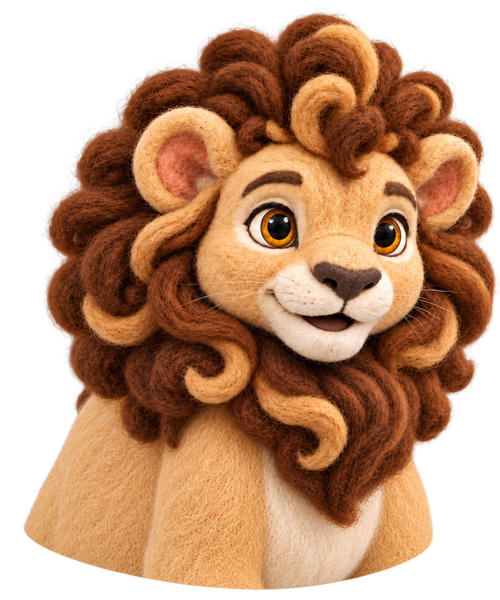